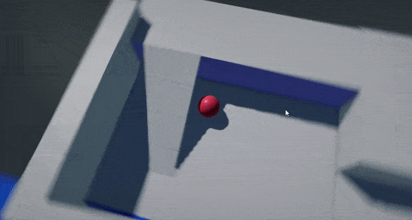

HOWTO: Create Spring Arm camera
1. Create script
Firstly, create a new script and add code that reads mouse input to rotate camera and performs the physics collision raycast to adjust camera placement (prevent intersecting with world collisions).
/// <summary>
/// Arc-ball 3rd person-style camera controller script that handles collisions with world.
/// </summary>
public class SpringArmCamera : Script
{
private Float2 _mouse = new Float2(45, 45);
/// <summary>
/// Target actor to follow.
/// </summary>
public Actor TargetActor;
/// <summary>
/// Target camera actor.
/// </summary>
public Camera CamerActor;
/// <summary>
/// Initial spring arm radius to roam around.
/// </summary>
public float Distance = 1000;
/// <summary>
/// The minimum distance for spring arm correction.
/// </summary>
public float MinDistance = 10.0f;
/// <summary>
/// The maximum distance for spring arm correction.
/// </summary>
public float MaxDistance = 2000.0f;
/// <summary>
/// Mouse movement speed scale.
/// </summary>
public float MouseSpeed = 0.5f;
/// <summary>
/// Mouse wheel movement speed scale.
/// </summary>
public float MouseWheelSpeed = 1.0f;
/// <summary>
/// The physics layers that with which spring arm will collide.
/// </summary>
public LayersMask CollisionLayers = LayersMask.Default;
/// <summary>
/// The additional distance to apply when colliding with geometry in order to prevent camera intersecting with it.
/// </summary>
public float CollisionDistanceBias = 10.0f;
/// <inheritdoc />
public override void OnStart()
{
// Auto-link actors
if (!TargetActor)
TargetActor = Actor;
if (!CamerActor)
{
CamerActor = Scene.FindActor<Camera>();
if (CamerActor == null)
Debug.LogError("Missing camera");
}
}
/// <inheritdoc />
public override void OnUpdate()
{
if (!CamerActor || !TargetActor)
return;
// Update input
_mouse += Input.MousePositionDelta * MouseSpeed;
_mouse.Y = Mathf.Clamp(_mouse.Y, -89, 89);
Distance += Input.MouseScrollDelta * -20.0f * MouseWheelSpeed;
Distance = Mathf.Clamp(Distance, MinDistance, MaxDistance);
// Update arc-ball camera
Quaternion rotation = Quaternion.Euler(-_mouse.Y, _mouse.X, 0);
Vector3 targetPosition = TargetActor.Position;
Vector3 direction = Vector3.Transform(Vector3.Forward, rotation) * Distance;
Vector3 newPosition = targetPosition + direction;
direction = (newPosition - targetPosition).Normalized;
CamerActor.Position = targetPosition + direction * Distance;
CamerActor.LookAt(targetPosition, Vector3.Up);
// Snap Camera if it intercepts with an environment
if (Physics.RayCast(targetPosition, direction, out RayCastHit hit, Distance, CollisionLayers))
{
var bias = CollisionDistanceBias + CamerActor.NearPlane;
var distance = Mathf.Max(hit.Distance - bias, MinDistance);
CamerActor.Position = targetPosition + direction * distance;
}
}
}
2. Setup
Add script to the player actor and optionally link the camera actor to control. Otherwise script will pick the first camera it founds on a scene.
3. Test it out!
Finally, start the game and test the result.
